В этом уроке:
- изучаем drawable теги: <bitmap>, <layer-list>, <selector>
Продолжаем разбирать типы Drawable, которые можно описывать с помощью XML-разметки. Проектов в этом уроке создавать не будем. Я просто буду в своем проекте создавать XML-файлы в папке drawable и ставить их фоном для View. А в тексте урока приведу код и скрины. Иногда буду вешать дополнительно серый фон, чтобы был виден реальный размер View.
Чтобы программно добраться до Drawable, который вы для View повесили как фон, надо просто вызвать метод getBackground.
Bitmap
Тег <bitmap> позволяет получить Drawable обертку для Bitmap. У тега есть несколько атрибутов.
В атрибуте src указываем нужный нам файл-изображение.
Атрибут gravity указывает, как bitmap будет располагаться внутри Drawable. Можно использовать несколько значений, разделенных знаком | . Значения тут стандартные, и некоторые из них мы часто используем при работе с layout. Рассмотрим пример.
<?xml version="1.0" encoding="utf-8"?>
<bitmap
xmlns:android="http://schemas.android.com/apk/res/android"
android:gravity="top|left"
android:src="@drawable/ic_launcher">
</bitmap>Значение атрибута gravity сдвигает изображение влево-вверх
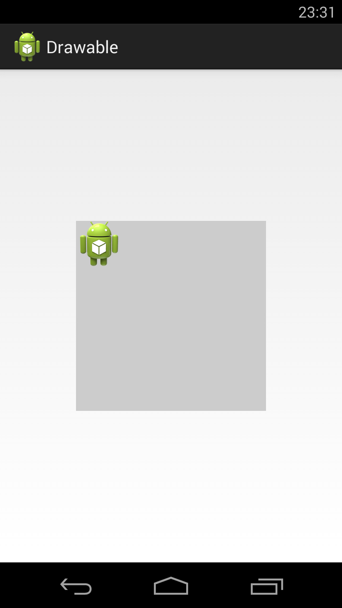
Далее ставим следующие значение атрибута gravity:
center - центр
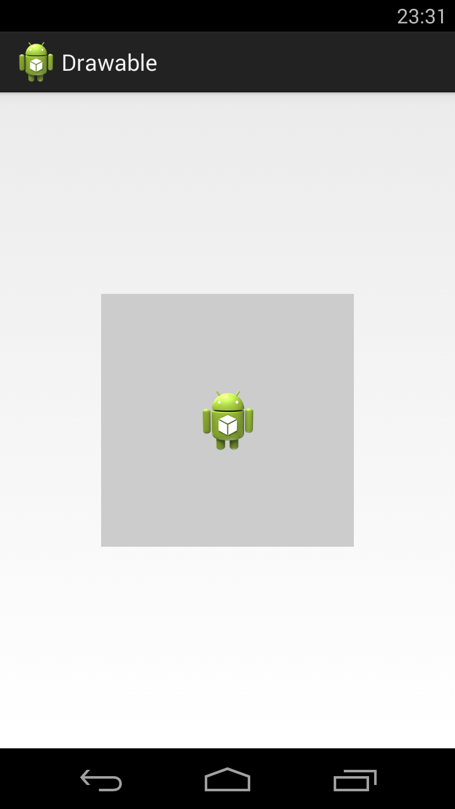
fill_horizontal - растянуть по горизонтали
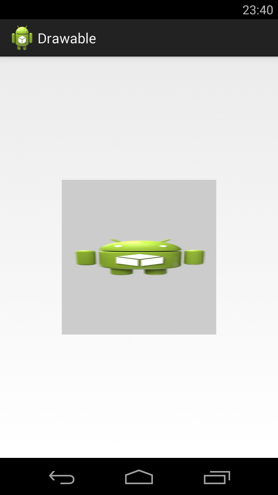
fill - растянуть (используется по умолчанию)
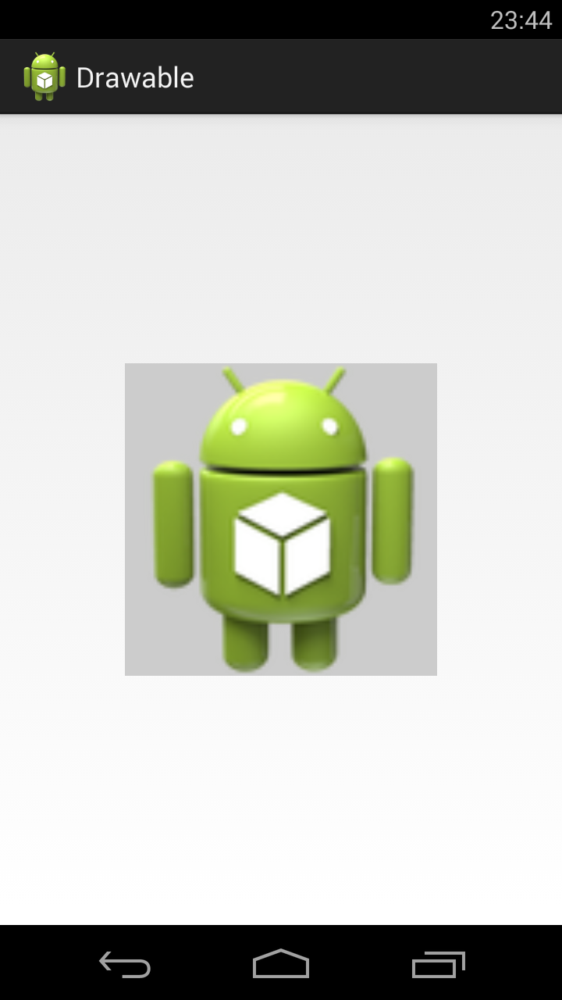
Насколько я понял, значения clip_vertical и clip_horizontal идентичны значениям fill_vertical и fill_horizontal в случае когда Bitmap по размеру больше, чем предоставляемое ему пространство. Т.е. clip_vertical сожмет его по вертикали, так чтобы он влез. А clip_horizontal - по горизонтали.
Атрибут tileMode - это режим «плитки». Позволяет замостить вашим изображением все доступное пространство. По умолчанию он имеет значение disabled.
Для примера я создам такой bitmap.
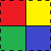
Четыре разных цвета, внутренние границы - сплошные, внешние - пунктиром.
Пример кода:
<?xml version="1.0" encoding="utf-8"?>
<bitmap
xmlns:android="http://schemas.android.com/apk/res/android"
android:src="@drawable/tilemode"
android:tileMode="repeat">
</bitmap>Если tileMode = repeat, то Bitmap будет размножен и займет все доступное пространство
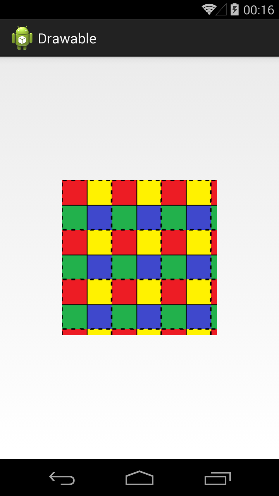
Далее меняем значение атрибута tileMode.
mirror – Bitmap также будет размножен, но при этом он будет чередоваться со своим отражением
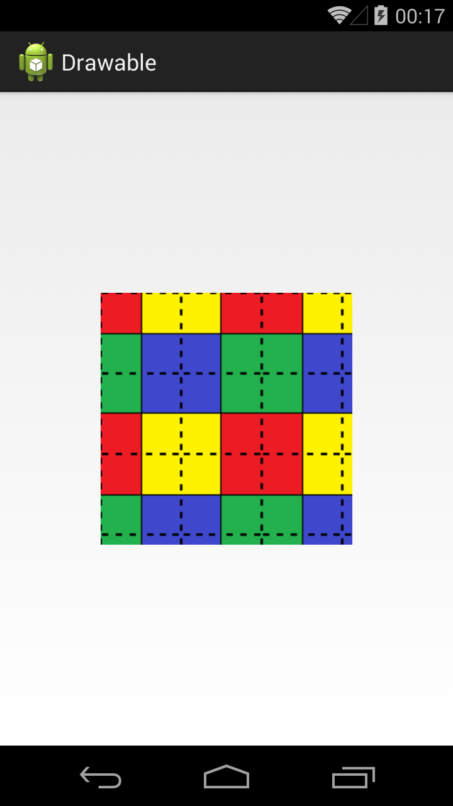
clamp – растягивает края картинки на все свободное пространство
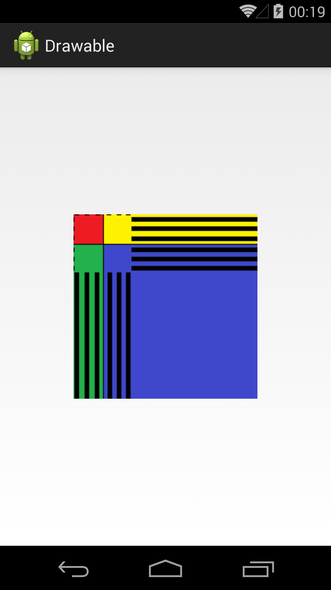
Прочие атрибуты тега <bitmap>:
antialias – сглаживание линий
dither – преобразование цветов, если текущей палитры недостаточно для отображения
filter – фильтр при сжатии или растягивании (пример результата использования есть в Уроке 158)
mipMap – использование mip-текстурирования. Про него можно почитать в википедии. Используйте этот режим, если планируете в процессе отображения уменьшать bitmap более чем в два раза.
Мы рассмотрели XML-описание, но вы всегда можете создать этот объект и программно. Java-реализация – класс BitmapDrawable.
Layer List
Мы можем описать Drawable, который будет состоять из нескольких Drawable-слоев. Для этого используется тег <layer-list>, а внутри него теги <item>.
Пример:
<?xml version="1.0" encoding="utf-8"?>
<layer-list
xmlns:android="http://schemas.android.com/apk/res/android">
<item
android:left="5dp">
<bitmap
android:gravity="left|top"
android:src="@drawable/ic_launcher">
</bitmap>
</item>
<item>
<bitmap
android:gravity="center"
android:src="@drawable/ic_launcher">
</bitmap>
</item>
<item
android:id="@+id/someDrawable"
android:bottom="20dp"
android:top="20dp">
<shape
android:shape="rectangle">
<stroke
android:width="1dp"
android:color="#000000">
</stroke>
</shape>
</item>
<item
android:right="5dp">
<bitmap
android:gravity="right|bottom"
android:src="@drawable/ic_launcher">
</bitmap>
</item>
</layer-list>У нас 4 слоя. Три bitmap со стандартной иконкой и одна фигура. Атрибуты left, top, right, bottom позволяют указывать отступы. А в атрибуте id можно указать id этого Drawable-слоя.
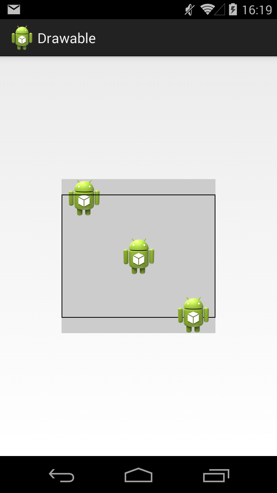
Обратите внимание, что важен порядок тегов item. Каждый последующий слой рисуется поверх предыдущего. Например, на получившемся изображении видно, что прямоугольник проходит "над" верхней иконкой, но "под" нижней.
Java-реализация – класс LayerDrawable.
Мы можем в коде получать доступ к отдельным Drawable внутри LayerDrawable. Для этого сначала получаем LayerDrawable.
LayerDrawable layerDrawable = (LayerDrawable) view.getBackground();А затем вызываем метод findDrawableByLayerId(int id) и указываем id, который вы указывали в атрибуте id тега item. На выходе получим Drawable.
Также у LayerDrawable есть еще несколько интересных методов
getDrawable(int index) - возвращает Drawable по индексу, а не по id
getId(int index) - возвращает id по индексу
getNumberOfLayers() - возвращает кол-во Drawable-слоев
setDrawableByLayerId(int id, Drawable drawable) - заменяет Drawable по id слоя (протестить)
State List
Тег <selector> позволяет отображать Drawable в зависимости от состояния View. Возможные состояние View можно посмотреть в документацие. Рассмотрим пример с двумя из них: checked и pressed. На экране будет ToogleButton. Эта кнопка переходит в состояние checked и обратно, если на нее нажимать. А во время нажатия, пока палец касается экрана, кнопка находится в состоянии pressed.
State List позволит нам использовать три разных Drawable для отображения кнопки в трех состояниях: обычное, checked, pressed. Для этого создадим три файла в папке drawable.
button.xml:
<?xml version="1.0" encoding="utf-8"?>
<shape
xmlns:android="http://schemas.android.com/apk/res/android"
android:shape="rectangle">
<solid
android:color="@android:color/darker_gray">
</solid>
</shape>Прямоугольник темно-серого цвета. Этот Drawable будем отображать в обычном состоянии кнопки.
button_pressed.xml:
<?xml version="1.0" encoding="utf-8"?>
<shape
xmlns:android="http://schemas.android.com/apk/res/android"
android:shape="rectangle">
<solid
android:color="@android:color/holo_blue_dark">
</solid>
</shape>Прямоугольник темно-синего цвета. Этот Drawable будем отображать в нажатом состоянии кнопки.
button_checked.xml:
<?xml version="1.0" encoding="utf-8"?>
<shape
xmlns:android="http://schemas.android.com/apk/res/android"
android:shape="rectangle">
<solid
android:color="@android:color/holo_blue_bright">
</solid>
</shape>Прямоугольник светло-синего цвета. Этот Drawable будем отображать когда кнопка находится в состоянии checked.
И еще один файл, button_selector.xml:
<?xml version="1.0" encoding="utf-8"?>
<selector
xmlns:android="http://schemas.android.com/apk/res/android">
<item
android:drawable="@drawable/button_pressed"
android:state_pressed="true">
</item>
<item
android:drawable="@drawable/button_checked"
android:state_checked="true">
</item>
<item
android:drawable="@drawable/button">
</item>
</selector>Этот последний Drawable является селектором. В нем мы используем теги item, в которых указываем для какого состояния какой Drawable использовать
В первом item мы указали state_pressed=true, а значит этот item будет выбран системой когда кнопка будет в состоянии pressed. И экране мы увидим Drawable из этого item, т.е. toogle_button_pressed.
В втором item мы указали state_checked=true, а значит этот item будет выбран системой когда кнопка будет в состоянии checked. И экране мы увидим toogle_button_checked.
В третьем item мы не указали никакого состояния, этот item будет выбран при обычном состоянии кнопки. И экране мы увидим toogle_button.
Учтите, что здесь важен порядок расположения item внутри selector. Т.е. система идет по ним по порядку и выбирает первый подходящий. Если вы третий item, который без явного указания состояния, поставите первым, то система всегда будет останавливаться на нем.
Состояния можно комбинировать, т.е. в одном item вы можете указать несколько разных состояний.
Ставим этот Drawable, как фон для ToogleButton:
<ToggleButton
android:id="@+id/toggleButton1"
android:layout_width="100dp"
android:layout_height="100dp"
android:background="@drawable/button_selector"
android:textSize="28sp">
</ToggleButton>В результате, сначала видим обычное состояние
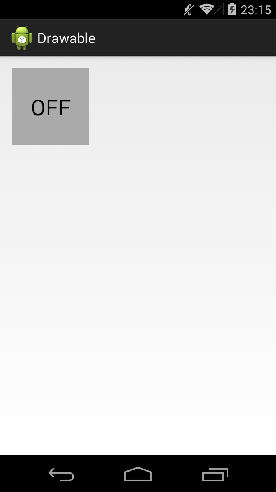
Нажимаем и держим, т.е. состояние pressed
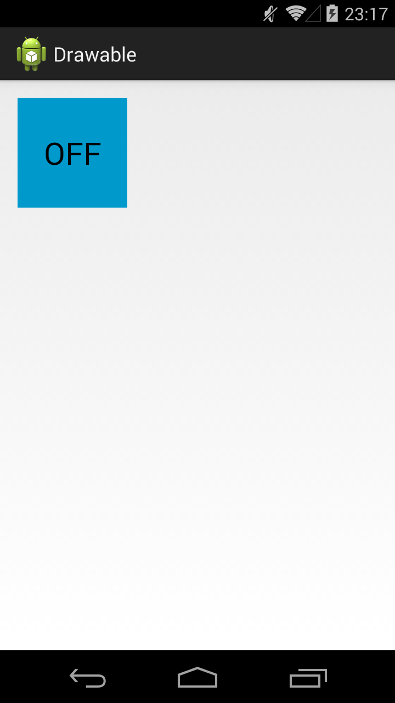
Отпускаем – включился checked
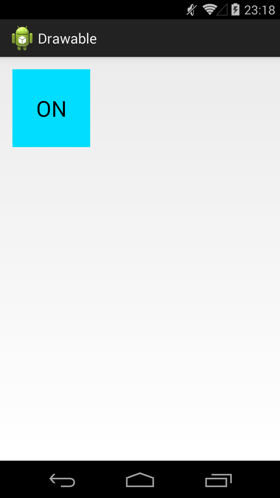
Еще раз нажмем-отпустим - выключится checked и будет снова обычное состояние. Для каждого состояния отображается свой Drawable.
Java-реализация – класс StateListDrawable.
У View, кстати, есть методы, которые позволяют программно управлять состоянием. Это, например: setPressed и setSelected.